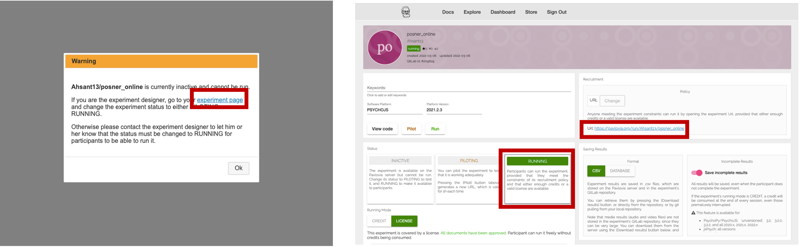

Chapter 4 Hosting: Pushing experiment online to Pavlovia
Let’s try to push our current experiment to Pavlovia by clicking either of the two buttons on the top (indicated by orange square). I prefer the first button since it will open up the experiment in the new screen once it commits the changes, while the second one will just push the changes.
Figure 4.1: pushing experiment to pavlovia

Figure 4.2: changing experiment to running